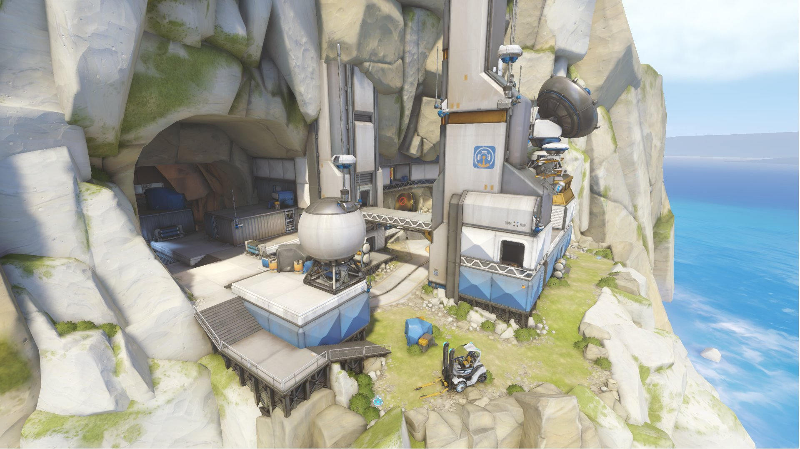
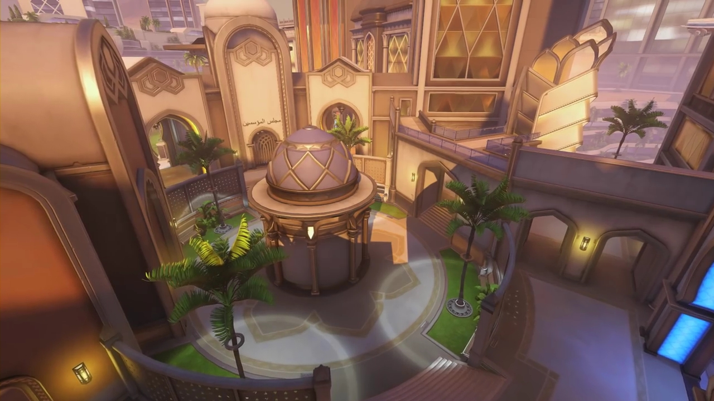

MAPE
Istraži sve mape
Kingsrow
King's Row je otmjena, kozmopolitska četvrt Londona u Engleskoj, ali odmah ispod njegove mirne površine rastu napetosti između robota i ljudi. Dok je veći dio moderne Britanije izgrađen na leđima robotskih radnika, uskraćena su im osnovna prava koja ljudi imaju, a većina omničkih ljudi prisiljena je živjeti u gustom, klaustrofobičnom gradu-ispod-grada koji neki nazivaju "Podzemlje". Veću zabrinutost izaziva činjenica da su nedavni prosvjednici prosvjednika koji se zalažu za robotska prava rezultirali nasilnim sukobima s policijom, a rješenja nema nigdje na vidiku.

Watchpoint Gibraltar
Na svom vrhuncu, Overwatch je održavao niz baza diljem svijeta, svaka sa svojom svrhom: održavanje mira, znanstveno istraživanje ili, u slučaju Watchpointa: Gibraltar, pružanje orbitalnog lansirnog objekta. Baza je zatvorena zajedno s ostatkom Overwatchovih instalacija, ali nedavno je bilo izvješća o aktivnostima unutar perimetra. Može li to ukazivati na prisutnost bivših agenata Overwatcha ili je ovo rad organizacija s lošijim namjerama?
Oasis
Oasis je jedan od najnaprednijih gradova na svijetu, sjajni dragulj koji se uzdiže iz Arapske pustinje. Spomenik ljudskoj genijalnosti i izumu, istraživači i akademici iz cijele regije okupili su se kako bi osnovali grad posvećen znanstvenom napretku bez ograničenja. Gradom i njegovim stanovnicima upravljaju ministarstva, skup briljantnih umova koji posjeduju mnoge tajne koje su privukle interes moćnih organizacija iz cijelog svijeta
